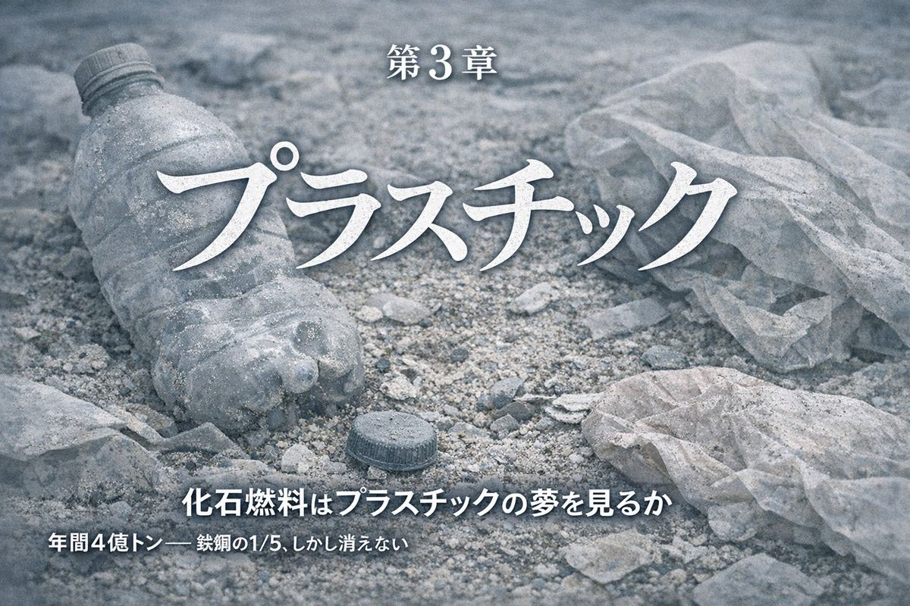
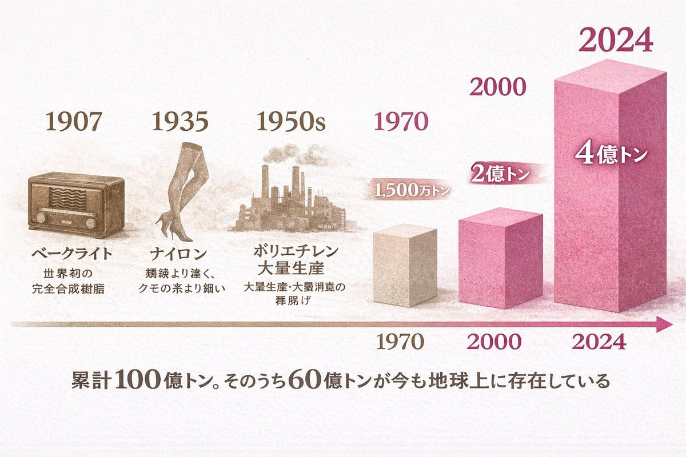
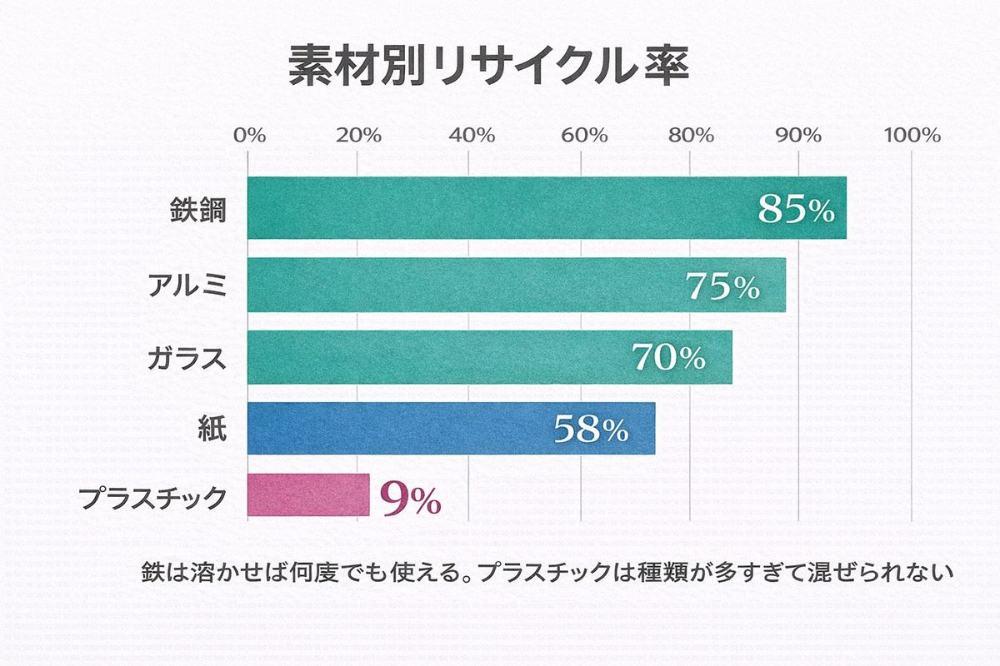
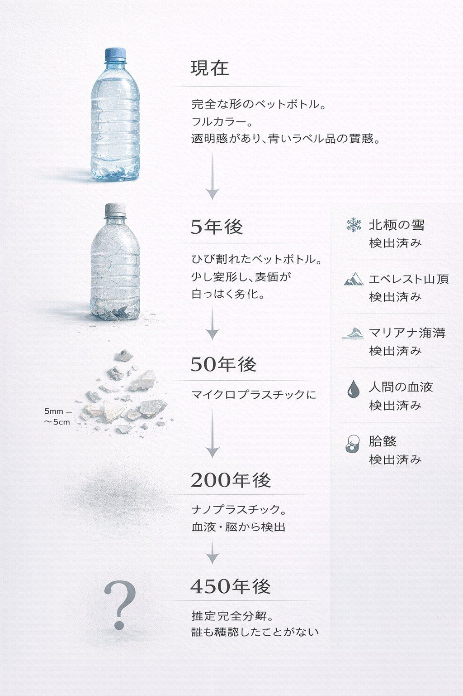
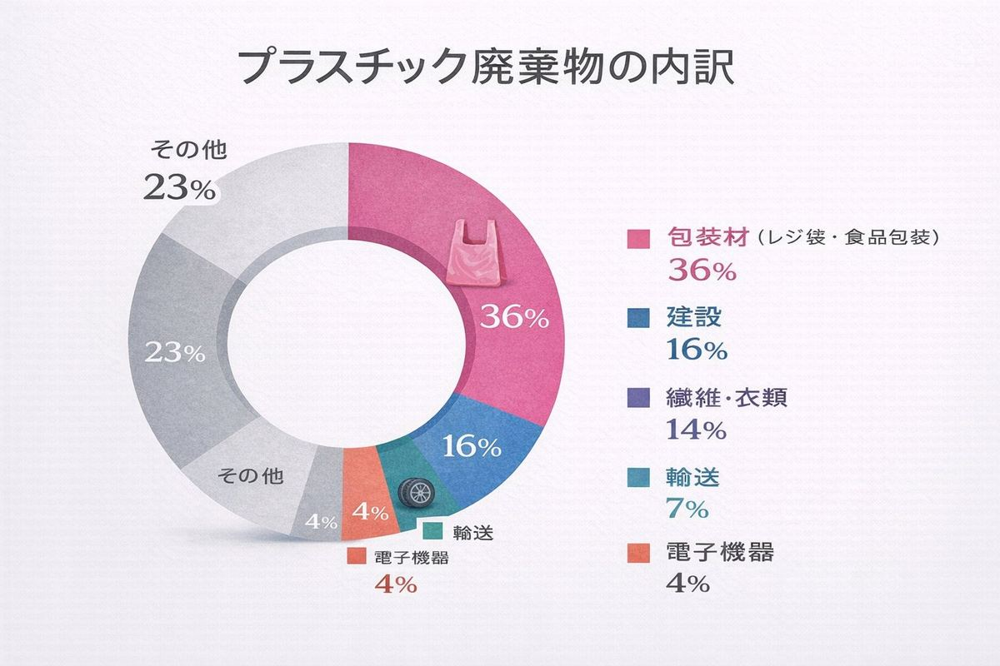
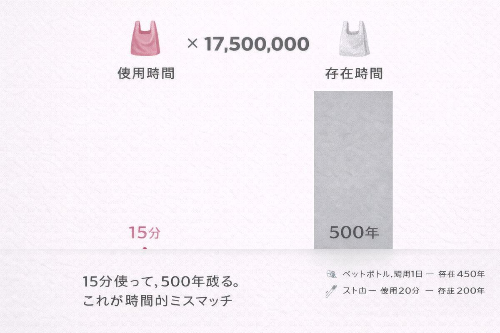
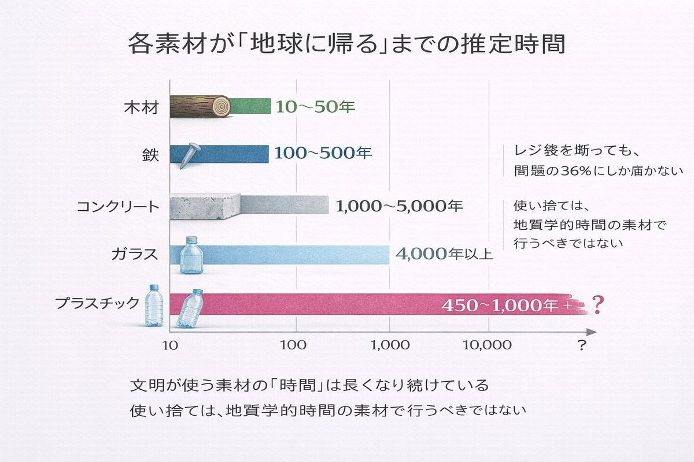
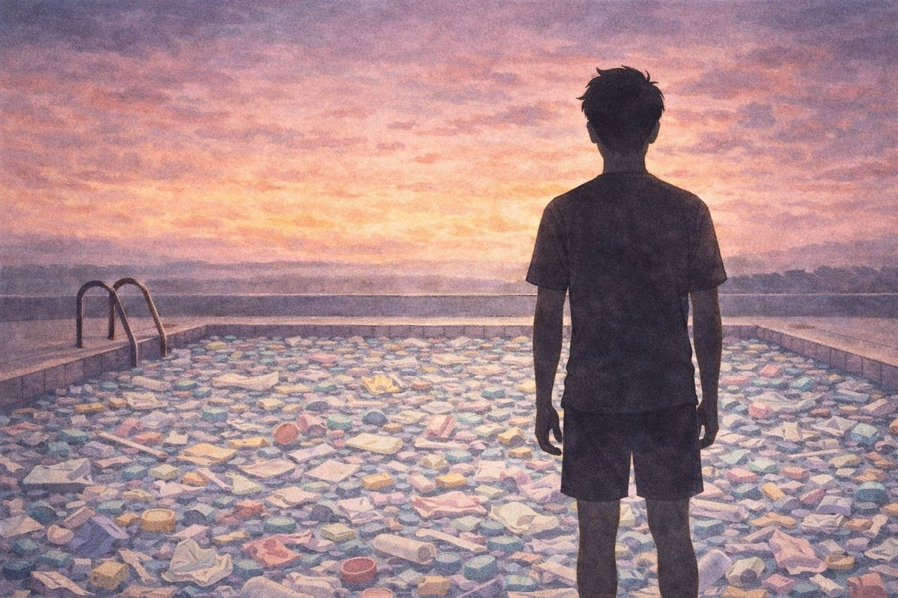

未来はプラスチックだ。 ── 映画『卒業』(1967) より
A. 2倍 B. ほぼ同じ C. 5分の1
正解はC。年間約4億トン。鉄鋼（19億トン）の5分の1にすぎない。
プラスチックが環境問題の代名詞になっている今、多くの人はプラスチックが最も大量に作られている素材だと思っている。しかし実際には砂（500億トン）の100分の1以下、コンクリート（140億トン）の35分の1、鉄鋼の5分の1だ。
では、なぜプラスチックだけがこれほど悪者にされるのか。
答えは単純だ。分解されないからだ。
プラスチックという言葉は、ギリシャ語の plastikos（形づくれる、成形可能な）に由来する。名前が性質そのものを表している素材は珍しい。
この命名は正確だった。プラスチックは液体のように型に流し込めて、冷えれば固体になる。金属のように高温炉はいらない。木のように木目の方向を気にする必要もない。ガラスのように割れない。水に溶けない。腐らない。電気を通さない。そして、恐ろしく軽い。
密度は鉄の6分の1、アルミの半分。同じ体積なら、プラスチックは何よりも軽い構造材だ。
あらゆる欠点がない。それが問題になるとは、誰も思わなかった。

プラスチックの歴史は意外と浅い。
| 年 | 出来事 |
|---|---|
| 1907 | ベークライト発明（世界初の完全合成樹脂） |
| 1935 | ナイロン発明（「鋼鉄より強く、クモの糸より細い」） |
| 1950s | ポリエチレン・ポリプロピレンの大量生産開始 |
| 1970 | 世界生産量 1,500万トン |
| 2000 | 2億トン |
| 2024 | 4億トン超 |
1950年から2024年までに人類が生産したプラスチックの累計は、約100億トンと推定されている。そのうちリサイクルされたのは10%未満。焼却が12%。残りの約60億トンは、今もこの地球上のどこかに存在している。
埋立地の中に。海の底に。魚の胃の中に。あなたの血液の中に。

プラスチックのリサイクル率は9%。
この数字を鉄鋼の85%、アルミの75%、ガラスの70%と並べると異様さが際立つ。なぜプラスチックだけがこれほど低いのか。
理由は「種類が多すぎる」ことにある。
プラスチックは一つの素材ではない。PET、HDPE、PVC、LDPE、PP、PS、その他。大きく分けて7種類、細かく分ければ数百種類ある。それぞれ融点が違い、化学的性質が違い、混ぜると品質が落ちる。鉄やアルミは溶かせば同じものに戻るが、プラスチックはそうはいかない。
さらに、プラスチック製品にはインクや接着剤や食品残渣が付着している。洗浄して分別してペレットにするコストは、新しいプラスチックを石油から作るコストとほぼ同じか、それ以上になることが多い。
つまりリサイクルが進まないのは、怠慢ではなく経済構造の問題だ。新品のほうが安い限り、リサイクルは善意のボランティアにしかならない。

「プラスチックは分解されない」と書いたが、正確に言えば「分解ではなく微細化する」。
ペットボトルを紫外線と風雨にさらすと、数年で目に見える劣化が始まる。しかしそれは「自然に帰った」のではない。大きなプラスチックが小さなプラスチックになっただけだ。5mm以下になったものをマイクロプラスチック、1μm以下をナノプラスチックと呼ぶ。
マイクロプラスチックはすでに、北極の雪から検出されている。エベレストの山頂から。マリアナ海溝の底から。人間の血液から。胎盤から。脳から。
ペットボトルが完全に分子レベルで分解されるまでにかかる推定時間は450年。レジ袋で20年。釣り糸で600年。つまり、人類が初めてプラスチックを大量生産し始めた1950年代のプラスチックは、まだ1つも「分解」されていない。
今この瞬間も、60億トンのプラスチックが少しずつ砕けて、小さくなり続けている。消えるのではなく、見えなくなっているだけだ。

「レジ袋を廃止すれば環境問題は解決する」。この直感は、データで見ると裏切られる。
プラスチック廃棄物の内訳を見ると、包装材（レジ袋・食品包装）が全体の約36%を占める最大カテゴリーだ。しかし、建設（16%）、繊維（14%）、輸送（7%）、電子機器（4%）など、目に見えないプラスチックのほうが圧倒的に多い。
あなたが着ているポリエステルのシャツは、プラスチックだ。洗濯するたびに何十万本ものマイクロファイバーが排水に流れ出る。合成ゴムのタイヤが路面で削れる粒子は、海洋マイクロプラスチックの主要な発生源の一つだ。
レジ袋を断ることは悪くない。しかし、プラスチック問題の本質は袋にはない。問題は、現代文明が丸ごとプラスチックでできていることにある。
プラスチックの原料は、99%が化石燃料だ。石油か天然ガス。
石油を精製してガソリンやディーゼルを作る過程で出る副産物（ナフサ）が、プラスチックの出発点になる。つまりプラスチックは、石油産業の子どもだ。
これは、脱プラスチックが「エネルギー問題」でもあることを意味する。世界が石油を燃料として使わなくなったとき（もしそんな日が来るなら）、プラスチックの原料をどうするかという問題が新たに生まれる。
一方で、面白い逆転が始まっている。バイオプラスチック（サトウキビやトウモロコシ由来）は現在、全プラスチック生産のわずか1%だが、成長率は年10%を超えている。酵素によるPET分解技術は、フランスのCarbios社が2025年に世界初の商業プラントを稼働させた。
問題は「プラスチックが悪い」のではない。「使ったら地球に返す仕組みがない」のが悪い。仕組みさえあれば、プラスチックは依然として夢の素材だ。
プラスチックの製造エネルギーは80 MJ/kg。鉄鋼（25 MJ/kg）の3倍以上、砂（0.1 MJ/kg）の800倍だ。
なのに、プラスチック製品は安い。100円ショップで買えるプラスチック容器は、同等の陶器やガラスの何分の一の値段だ。
この逆説の答えは「密度」にある。プラスチックの密度は0.9〜1.4 g/cm³。鉄（7.9 g/cm³）の6分の1以下。つまり、同じ重さの製品を作るのに鉄より6倍の体積が使える。軽さそのものがコスト削減になる。輸送費も減る。加工温度も低い（200℃前後で鉄の1500℃の7分の1）。
エネルギー単価は高いが、少ない量で大きな製品が作れるから、最終製品は安くなる。この「kg単価は高いが製品単価は安い」構造が、プラスチックが世界を席巻した本当の理由だ。

生物学者の本川達雄は、体の大きな動物ほど時間がゆっくり流れることを「象の時間、ネズミの時間」と表現した。
素材にも「時間」がある。
木材は数十年で朽ちる。鉄は数百年で錆びて土に帰る。コンクリートは数千年で風化する。そしてプラスチックは、数百年経ってもほとんど変わらない。

人類の文明は、使う素材の「時間」がどんどん長くなる方向に進化してきた。石器（永遠）→ 木器（数十年）→ 青銅器（数千年）→ 鉄器（数百年）→ プラスチック（数百年〜永遠）。
私たちは、地質学的な時間スケールで消えない素材を、使い捨てにしている。レジ袋の寿命は15分。その袋が消えるのに500年。使用時間と存在時間の比率は、1対1,750万。
この不条理に、名前をつけたい。「時間的ミスマッチ」と呼ぼう。プラスチック問題の本質は汚染ではなく、時間のスケールが合っていないことにある。

プラスチックは悪者か？
量で見れば、砂の100分の1。鉄の5分の1。CO₂排出では鉄鋼業のほうが3倍以上多い。プラスチック問題の深刻さは量ではなく、「消えない」という一点に集約される。
もしプラスチックが、木材のように10年で土に帰るなら。あるいは鉄のように85%がリサイクルされるなら。プラスチックは依然として「夢の素材」だろう。軽く、安く、自在に形が変わり、水を通さず、電気を通さない。こんな便利なものを、人類は他に持っていない。
1967年の映画『卒業』で、主人公の青年はパーティで中年男に言われる。「一言だけアドバイスがある。プラスチックだ。」あの台詞は、当時は未来への希望だった。
その希望は間違っていなかった。間違っていたのは、使い終わったあとのことを考えなかったことだ。
夢の素材は、まだ夢の途中にいる。悪夢に変わるか、目覚めるかは、リサイクル率が9%のままかどうかにかかっている。